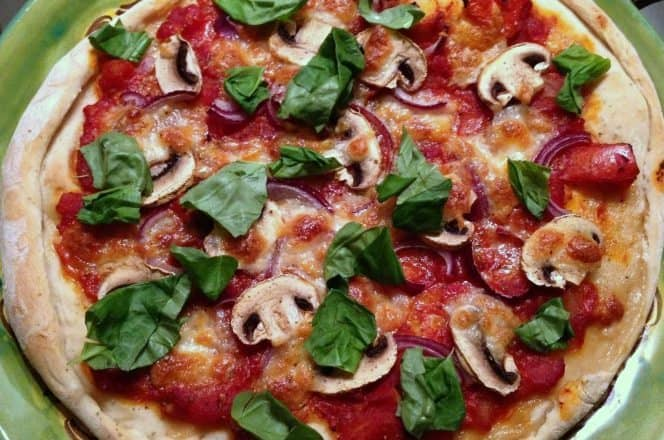

Zelfgemaakte pizza

Geschiedenis
Wat je nodig hebt voor 3 pizza’s
voor het pizzadeeg:
- – 500gr tarwebloem
- – 300ml water
- – 7gr gist (1 zakje)
- – 10gr zout
- – 300ml water
- – olijfolie
voor de tomatensaus:
- – 1/2 ui
- – 3 teentjes knoflook
- – 140gr tomatenpuree
- – 4 tomaten
- – peper
- – zout
- – olijfolie
om te beleggen (puur ter inspiratie, bedenk zelf wat je lekker vindt):
- – rode ui
- – champignons
- – mozzarella
- – basilicum
- – salami
- – paprika
- – spinazie
Bereidingswijze